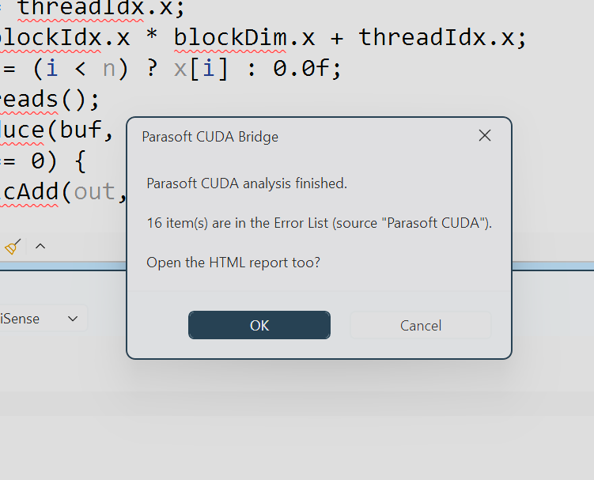

Generate a companion solution
For CMake projects, configure with Visual Studio 2026 and create companion projects for CUDA sources.
Customer evaluation · Visual Studio 2026
Prepare a Visual Studio companion solution from a CMake CUDA project, run analysis, and review mapped findings in the IDE.
Parasoft CUDA Bridge · Engineering Software Lab Ltd. · Evaluation material
01 · What it does
For CMake projects, configure with Visual Studio 2026 and create companion projects for CUDA sources.
Run C++test on host-visible CUDA source using the project's build settings and nvcc host flags.
Mapped findings appear in the Error List and editor. An HTML report is also generated.
02 · Before you start
The Bridge does not supply or extend Parasoft entitlements, CUDA Toolkit licensing, or Visual Studio licensing.
03 · CMake preparation
.cu.cpp companions.*-parasoft.sln in Visual Studio.04 · Genuine Visual Studio capture

.cu.cpp mirror in this capture.Review each finding with its source location and analyzer severity. A report finding is not automatically a confirmed defect.
This local Flow Analysis Standard example checked 1 file and 144 source lines and reported 5 findings (3 Very High, 2 High).
05 · CUDA guideline rules
CUDA-1_3 checks selected CUDA API result handling. CUDA-1_4 checks whether a direct kernel launch is followed by an error check. Both are heuristic pattern checks.
Checks can miss cases or report false positives. Review source and control flow; a clean run is not proof of compliance.
Reference: NVIDIA CUDA C++ Guidelines 3.0.1.
06 · Separate analysis layers
Findings in the local vectorAdd run: 1 file, 144 lines, 3 Very High and 2 High.
Heuristic findings in a separate vectorAdd run, across CUDA-1_3 and CUDA-1_4.
07 · Report options

Report counts vary by project, rules, configuration, and tool version.
08 · Scope and limitations
09 · Local smoke evidence
Professional edition with C++ workload.
RTX 5080 Laptop, compute capability 12.0.
Visual Studio 2026 generator path.
Installed licensed tools required.
Native CUDA GoogleTest smoke: 3 tests passed, 26/26 host lines covered. Device code was not instrumented.
These results are specific to the tested setup and do not guarantee compatibility with other toolchain versions.
10 · Evaluation next steps
Verify Visual Studio, CUDA Toolkit, CMake, Parasoft licensing, and ESL activation.
Check mappings, severity, false positives, missing cases, and setup output with the owning engineer.
Record project/build details, supported configurations, test needs, and acceptance criteria.
Engineering Software Lab Ltd. · sales@eswlab.com · eswlab.com